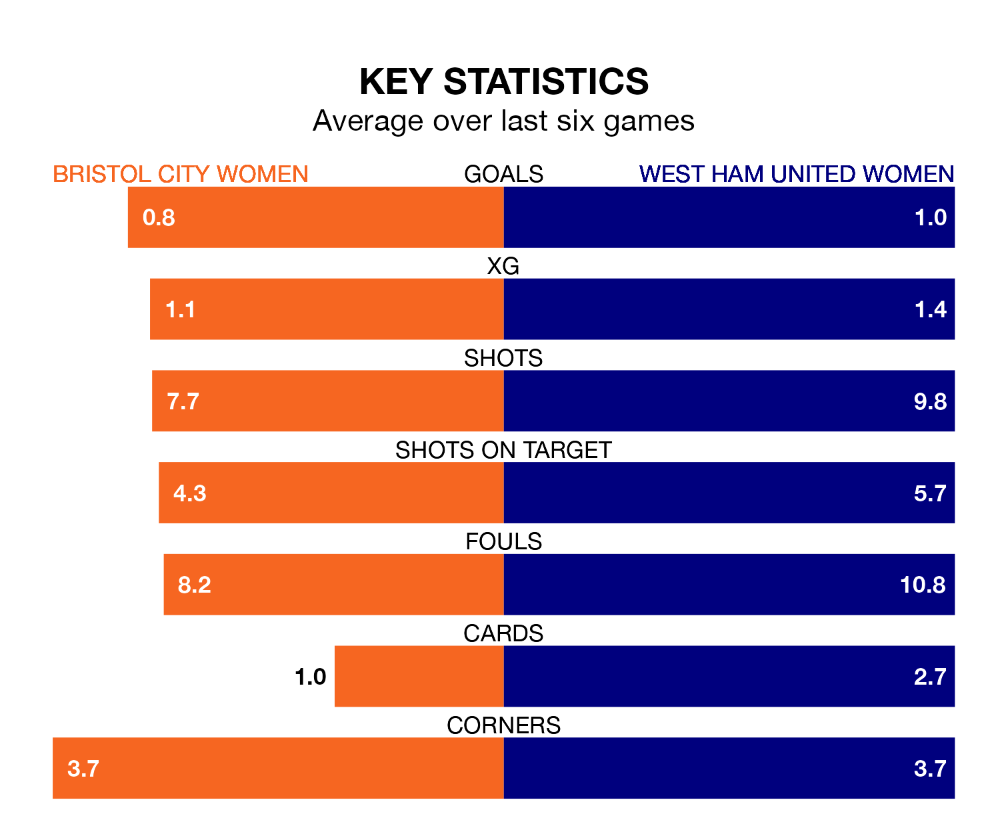

Sunday's early match at Robins High Performance Centre sees the league's two bottom sides face each other, as rock-bottom Bristol City Women host West Ham United Women.
Bristol City have picked up five points from their first five FA Women's Super League games, with one win and two draws.
That is the same number of points as the Hammers have collected, having also won one and drawn two.
Bristol City are in terrible form in FA Women's Super League, with no wins and two draws from their last six games.
But with no wins and a draw over that period, West Ham United's form is even worse – they have taken one point from 18, compared to the Robins' two.
In the last five years, Bristol City and West Ham United have played each other on four occasions. Bristol City won one of them, West Ham United two, and they drew once.
On average, the Robins scored 1.2 goals and the Hammers 2.2 in those matches.
Their last meeting was on November 5, when Bristol City won 3-2 away.
With 11 goals in 11 games so far this season, the Hammers are the league's second-lowest scorers with 1.0 goals per game. And they are conceding more than average, letting in 25 goals at a rate of 2.3 per game.
The home team are also below average scorers, with 1.1 goals per game, compared to a league average of 1.7. They have conceded 2.6 goals per game.
Bristol City's last match was on January 21, a 3-2 loss against Brighton and Hove Albion Women, with Abigail Harrison and Carrie Jones getting the goals for the Robins.
West Ham United lost 4-3 against Tottenham Hotspur Women last time out, also on Sunday, with Amber Tysiak, Risa Shimizu and Viviane Asseyi on the scoresheet.
Updated: 09:07 (UTC), 24/01/24